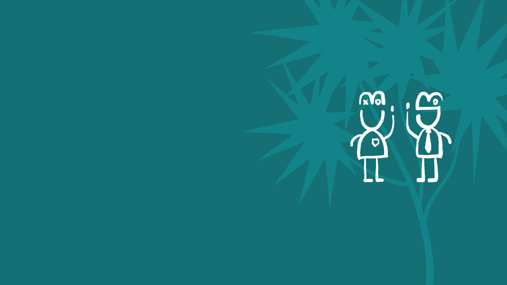

Accessibility Support Hub
Make court assistance easy to find, understand and intuitive to access for inclusive users.
Aligned with the New Zealand Government Disabilities Strategy, this project organised fragmented court support information into a clear, inclusive digital experience.
As part of a three-person UX team, I worked across project management, research, service blueprinting, information architecture, prototyping, usability testing and design system refinement.
How might we create a reusable and scalable pattern that makes court assistance easy to find, understand and request across the website?
Court users with different access needs may need to understand available support, prepare information and request assistance before attending court.
Users needed a clearer entry point for court support, while the organisation needed a pattern that could work with current content and future service updates.
The process moved from understanding the service context to validating a high-fidelity hub concept.
Research, workshops, field survey and service blueprint.
Evaluation, prioritisation and scope alignment.
Information architecture, user flows and prototype iteration.
High-fidelity prototype, design system and documentation.
Key evidence
Service Blueprint Workshop
The service blueprint helped the team connect user actions, frontstage touchpoints and backstage operations.
Key evidence
Evaluative Workshop
The evaluative workshop turned broad findings into a prioritised pathway.
The IA clarified how the new hub related to existing Ministry of Justice pages.
Testing and evaluation identified navigation issues, content clarity problems and interaction friction.
The final prototype presented a focused hub experience, with clearer content hierarchy, accessible page patterns and guided support pathways.
The design system focused on calm interface language, clear colour use, accessible typography and reusable components.
The project delivered a high-fidelity prototype and a reusable structure for court support content.
R15 · Clarity & Accessibility Audit
ASH centres on accessibility, repeated barriers, support pathways and interface clarity. The mapping supports the case but does not lead the case.
Navigation